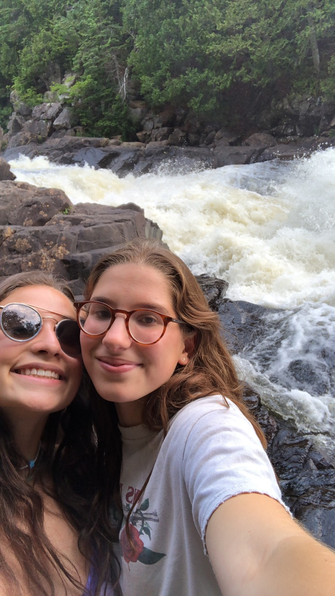
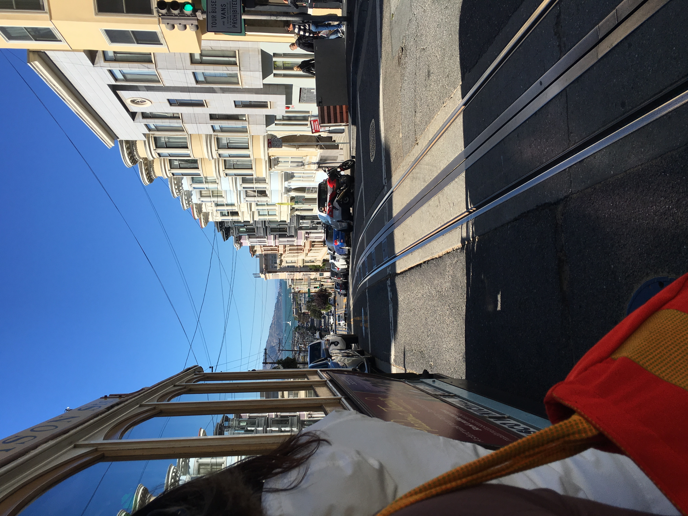
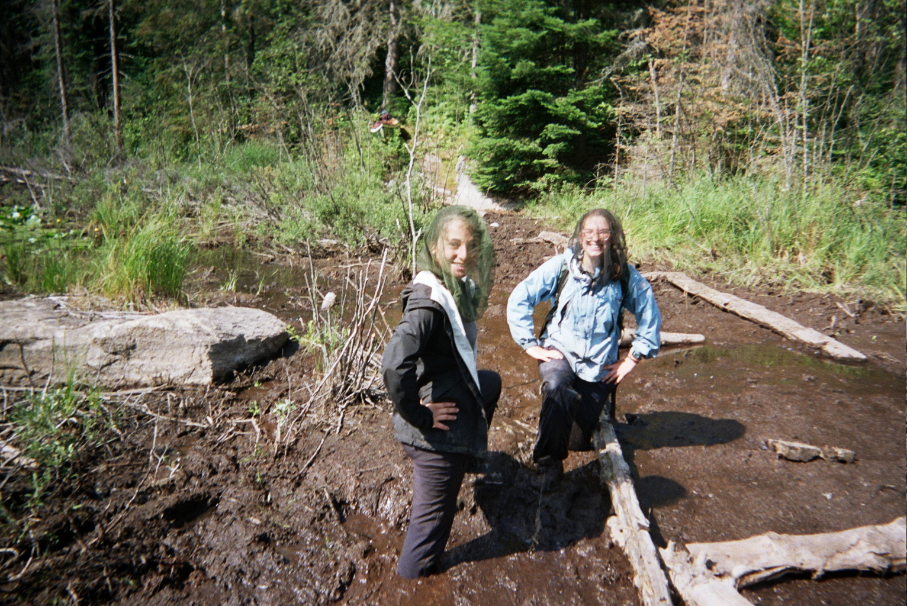
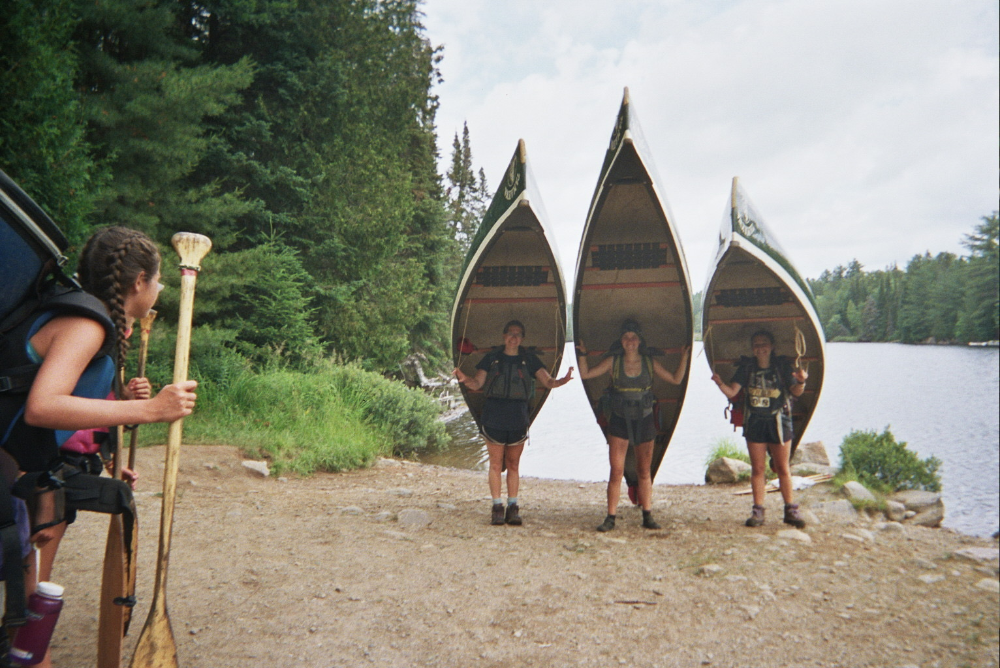

Hi! My name is Katie Wolberg. I am a junior at the University of Michigan School of Information
focusing in Information Analytics and minoring in Environmental Science. When tasked with creating a personal
portfolio, I knew mine would have to be about books! I love reading and always am on the hunt for my
next book. By creating this website, I hope to share my passions with you!
In my free time (when I'm not reading) I love exploring the outdoors! (hence the Environmental Science minor)
Last March, I went to Big Bend, TX over spring break for a week long backpacking trip! I hope that I can explore other
National Parks soon!